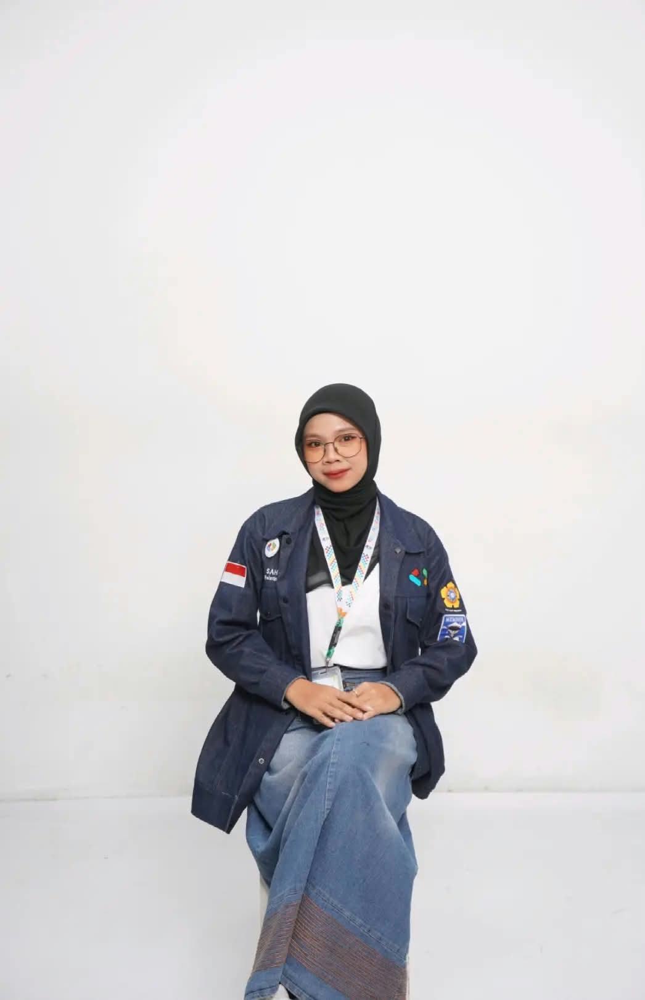

01 / HOME
Hi, I'm Nayla Sahara.
Mahasiswa Teknik Informatika Universitas Sriwijaya yang tertarik pada teknologi, pengembangan diri, komunikasi, dan pengalaman berorganisasi.

Education
Teknik Informatika, Universitas Sriwijaya
Organization
HMIF UNSRI & GDGoC UNSRI
Focus
Technology, communication, art & personal development